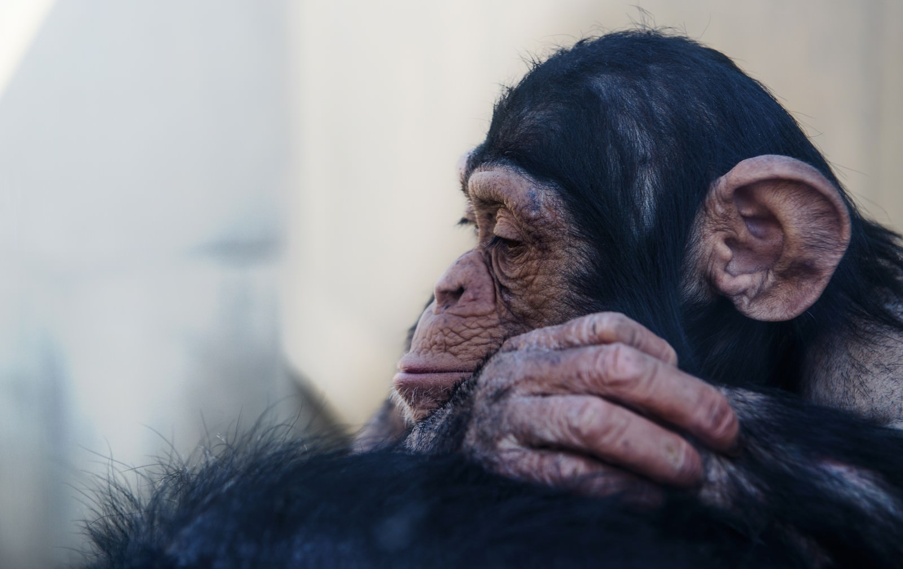
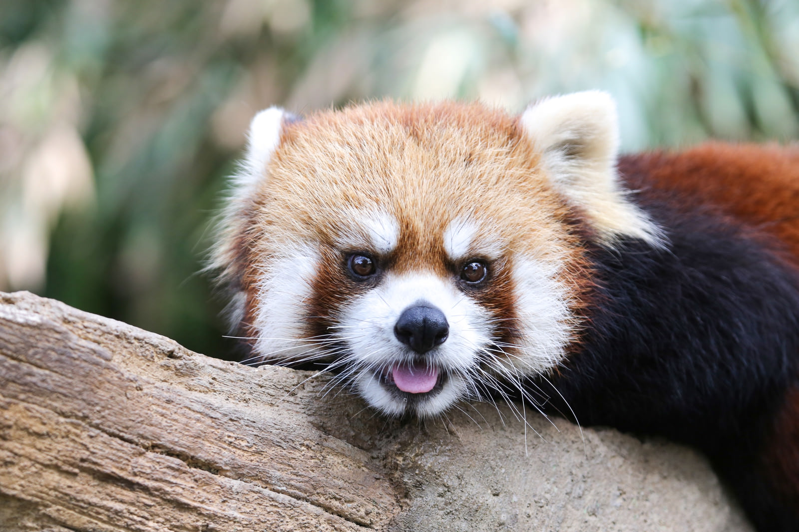
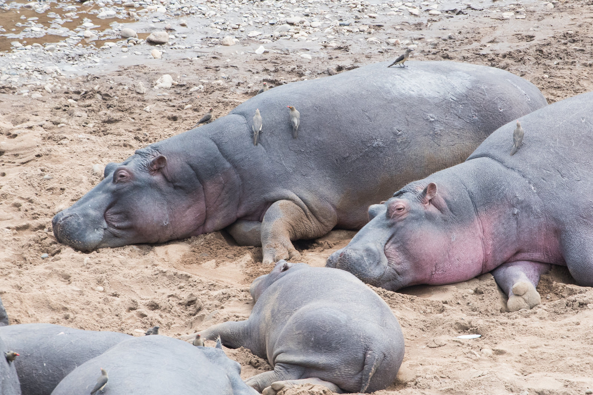
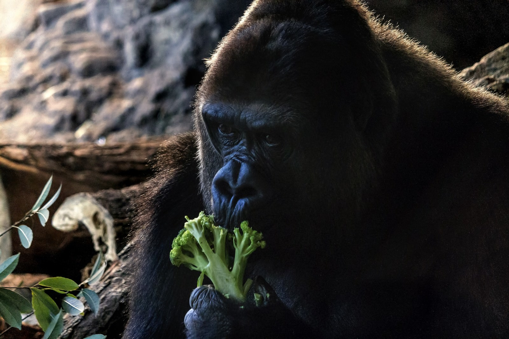

ようこそ、もふパラへ！様々な動物を紹介するよ！
ライオン

ライオンは大型の猫科動物で、アフリカとアジアに分布します。草食動物から大型の獲物まで捕食します。
雄は鬣（たてがみ）が特徴で、社会性があり家族群れを形成します。頭部が大きく、強力な顎と鋭い爪を持ち、
時折咆哮することで知られています。主にサバンナや草原に生息し、狩猟や子育ては主に雌が担当します。
たてがみのふさふさがかわいい。
チンパンジー

チンパンジーは知られるところでは最も近縁の人類とされる霊長類で、その可愛らしさは知性と共に表れます。
人間の行動や表情に似た仕草や笑顔があり、その機敏で俊敏な動きも愛らしい特徴です。社会性が強く、
群れで協力し合いながら生活します。遊び心や好奇心旺盛で、道具の使用や表現能力も優れています
人間みたいでかわいい。
レッサーパンダ

レッサーパンダは小柄で愛くるしい外見が魅力の動物です。その大きな丸い目、ふわふわの毛並み、かわいらしいしぐさが特徴で、
まるでぬいぐるみのような存在感があります。樹上で器用に動き、竹を食べる姿勢も可愛らしく、
まるでほほ笑んでいるような表情が愛らしいです。
とりあえず、すごくかわいい生き物。
カバ

カバは大きな丸い体、短い脚、丸い耳が特徴の川のそばに生息する動物です。そのずんぐりとした体つきや独特の鼻の形が愛らしさを引き立てます。
水浴びが好きで、川や池に浸かりながら涼む様子が愛らしいです。また、大きな口を開けて草を食べる姿勢もユニークで可愛らしい要素の一つです。
家族や仲間と一緒に行動し、社会性が豊かな一面もあります。
口が大きの可愛い。
ゴリラ

ゴリラは強靭で優雅な大型霊長類で、その力強い姿勢と同時に穏やかで知的な表情が魅力です。特にシルバーバックと呼ばれる成熟雄ゴリラは銀色の
背中が目を引き、家族を守る姿が感動的です。幼いゴリラも好奇心旺盛で遊び心溢れ、その愛くるしいしぐさが人々を引きつけます。群れを形成し社
会性が豊かであり、互いにコミュニケーションを取る様子も印象的です。
ブロッコリー僕も食べたい。
フリー素材サイト：https://www.pakutaso.com/